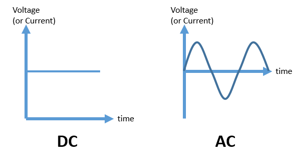
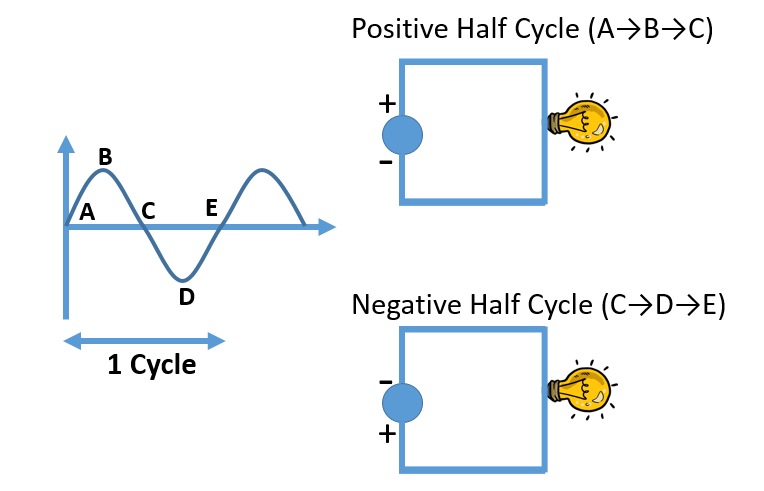
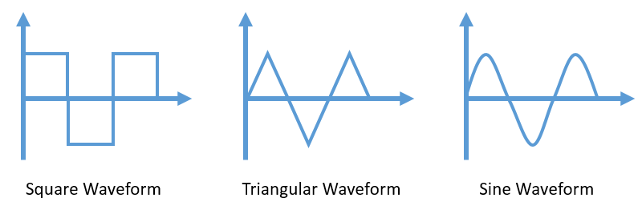

HOME BLOG EBOOKS ABOUT CONTACT SHOP
AC stands for Alternating current. Alternating current (AC) is an electric current which periodically reverses direction and changes its magnitude continuously with time. About 90% of supply used for commercial purposes in the world is AC.
Although the abbreviation AC stands for Alternating current, it is also used to refer an alternating voltage as well.
A DC supply has a constant magnitude and direction (positive to negative). For instance your the car battery will always have a constant magnitude (voltage) between its terminals. Its positive and negative terminals will always remain as it is. On the contrary, for an AC supply like your power outlet, both magnitude and direction changes periodically. The whole process takes place in 2 parts or 2 half cycles, positive half cycle and the negative half cycle. In the positive half cycle, the voltage (and therefore the current) will gradually increase from 0 to a max value, then starts decreasing back to zero. The same thing happens in the negative half cycle, but in reverse direction. Reverse direction? So does the current flows from negative to positive terminal in the negative half cycle? No, it doesn’t happen that way. It’s the terminals that change its polarity. The terminal that would have been positive in the positive half cycle changes to negative in the negative half cycle and similarly for the other terminal. This essentially means that there is no fixed Positive and Negative terminals for AC supply. A terminal will have one polarity in one half cycle and the opposite polarity in the other half cycle.


DC seems so straightforward, So why even bother generating AC? . Because it's a lot easier to generate, transmit and manipulate an AC supply.
Now the question is how does the voltage (or current) vary in an AC supply? Does the voltage shoot up to a max value all of a sudden and fall back to zero again or does it follow a triangular pattern?

All these patterns are called waveforms. A waveform is basically a plot of a quantity (in our case voltage/current) against time. All these waveforms shown in the figure above and many more, are definite possibilities and many of them have real practical applications. But for commercial AC supply, the pure sine wave is the most preferred waveform, because it’s easier to generate and mathematically simpler to analyze.